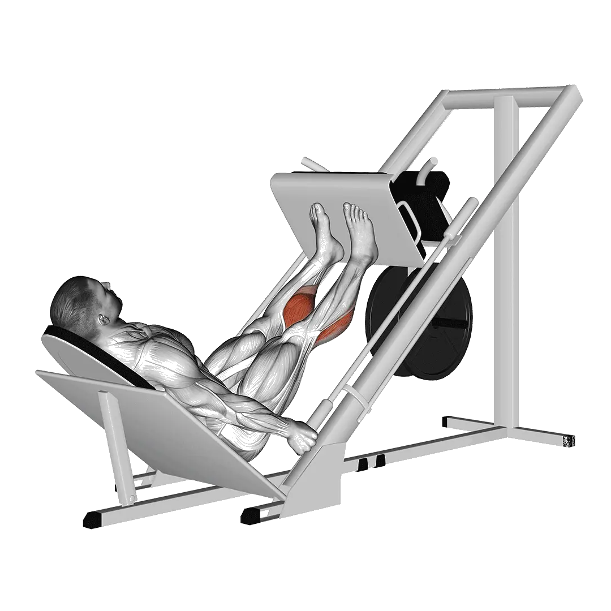

Presse développé élévation mollets
Presse développé élévation mollets permet de consulter la charge moyenne et les standards de force comme repères pour jambes. Les muscles principaux sont Adducteurs.

Poids moyen : Intermédiaire
Repère pour une personne de niveau intermédiaire.
Hommes
449 lb
Femmes
152 lb
Poids moyen de Presse développé élévation mollets [1RM]
| Niveau | ||
|---|---|---|
| Débutant | 106 lb | 27 lb |
| Novice | 244 lb | 75 lb |
| Intermédiaire | 449 lb | 152 lb |
| Avancé | 716 lb | 255 lb |
| Élite | 1029 lb | 379 lb |
Note : ces standards sont des estimations de 1RM basées sur des pratiquants moyens. Ils peuvent varier selon le poids de corps, l'âge et d'autres facteurs personnels. Consulte les données détaillées dans le tableau ci-dessous.
Standards de force de Presse développé élévation mollets (lb)
Hommes par poids de corps (lb) [1RM]
| Poids de corps | Débutant | Novice | Intermédiaire | Avancé | Élite |
|---|---|---|---|---|---|
| 110 | 19 | 83 | 199 | 365 | 570 |
| 120 | 32 | 109 | 239 | 418 | 637 |
| 130 | 48 | 137 | 279 | 471 | 701 |
| 140 | 65 | 165 | 318 | 522 | 763 |
| 150 | 83 | 193 | 357 | 572 | 823 |
| 160 | 102 | 222 | 396 | 620 | 881 |
| 170 | 122 | 251 | 434 | 668 | 937 |
| 180 | 143 | 280 | 472 | 714 | 992 |
| 190 | 163 | 308 | 509 | 760 | 1046 |
| 200 | 184 | 337 | 545 | 804 | 1098 |
| 210 | 205 | 365 | 581 | 847 | 1148 |
| 220 | 226 | 393 | 616 | 890 | 1198 |
| 230 | 248 | 421 | 651 | 931 | 1246 |
| 240 | 269 | 448 | 685 | 972 | 1293 |
| 250 | 290 | 475 | 718 | 1012 | 1338 |
| 260 | 311 | 502 | 751 | 1051 | 1383 |
| 270 | 332 | 529 | 784 | 1089 | 1427 |
| 280 | 353 | 555 | 816 | 1126 | 1470 |
| 290 | 373 | 581 | 847 | 1163 | 1512 |
| 300 | 394 | 606 | 878 | 1199 | 1553 |
| 310 | 414 | 631 | 908 | 1235 | 1593 |
Hommes par âge [1RM]
| Âge | Débutant | Novice | Intermédiaire | Avancé | Élite |
|---|---|---|---|---|---|
| 15 | 90 | 208 | 382 | 610 | 876 |
| 20 | 103 | 238 | 437 | 698 | 1003 |
| 25 | 106 | 244 | 449 | 716 | 1029 |
| 30 | 106 | 244 | 449 | 716 | 1029 |
| 35 | 106 | 244 | 449 | 716 | 1029 |
| 40 | 106 | 244 | 449 | 716 | 1029 |
| 45 | 101 | 231 | 426 | 679 | 976 |
| 50 | 94 | 217 | 400 | 638 | 916 |
| 55 | 87 | 201 | 370 | 590 | 847 |
| 60 | 80 | 183 | 337 | 538 | 773 |
| 65 | 72 | 166 | 305 | 486 | 699 |
| 70 | 65 | 149 | 273 | 436 | 627 |
| 75 | 58 | 133 | 245 | 390 | 561 |
| 80 | 52 | 119 | 219 | 349 | 501 |
| 85 | 46 | 106 | 196 | 313 | 449 |
| 90 | 42 | 96 | 177 | 282 | 405 |
Femmes par poids de corps (lb) [1RM]
| Poids de corps | Débutant | Novice | Intermédiaire | Avancé | Élite |
|---|---|---|---|---|---|
| 90 | 10 | 44 | 104 | 190 | 296 |
| 100 | 14 | 50 | 114 | 203 | 311 |
| 110 | 17 | 56 | 122 | 214 | 326 |
| 120 | 20 | 62 | 131 | 225 | 339 |
| 130 | 23 | 67 | 139 | 236 | 352 |
| 140 | 26 | 73 | 146 | 245 | 364 |
| 150 | 29 | 78 | 153 | 255 | 375 |
| 160 | 32 | 83 | 160 | 264 | 386 |
| 170 | 35 | 87 | 167 | 272 | 396 |
| 180 | 38 | 92 | 173 | 280 | 406 |
| 190 | 41 | 97 | 179 | 288 | 415 |
| 200 | 44 | 101 | 185 | 295 | 424 |
| 210 | 47 | 105 | 191 | 303 | 433 |
| 220 | 50 | 109 | 197 | 310 | 441 |
| 230 | 52 | 113 | 202 | 316 | 449 |
| 240 | 55 | 117 | 207 | 323 | 457 |
| 250 | 58 | 121 | 212 | 329 | 464 |
| 260 | 60 | 125 | 217 | 335 | 472 |
Femmes par âge [1RM]
| Âge | Débutant | Novice | Intermédiaire | Avancé | Élite |
|---|---|---|---|---|---|
| 15 | 23 | 64 | 129 | 217 | 323 |
| 20 | 26 | 73 | 148 | 249 | 370 |
| 25 | 27 | 75 | 152 | 255 | 379 |
| 30 | 27 | 75 | 152 | 255 | 379 |
| 35 | 27 | 75 | 152 | 255 | 379 |
| 40 | 27 | 75 | 152 | 255 | 379 |
| 45 | 25 | 71 | 144 | 242 | 360 |
| 50 | 24 | 67 | 135 | 227 | 338 |
| 55 | 22 | 62 | 125 | 210 | 312 |
| 60 | 20 | 56 | 114 | 192 | 285 |
| 65 | 18 | 51 | 103 | 173 | 258 |
| 70 | 16 | 46 | 92 | 156 | 231 |
| 75 | 14 | 41 | 83 | 139 | 207 |
| 80 | 13 | 36 | 74 | 124 | 185 |
| 85 | 12 | 33 | 66 | 112 | 166 |
| 90 | 10 | 29 | 60 | 101 | 149 |
Note : une barre standard de salle de sport pèse généralement 44 lb.
Muscles ciblés
| Groupe | Muscles |
|---|---|
| Muscles principaux | Adducteurs |
| Muscles secondaires | Aucun |
| Stabilisateurs | Aucun |
| Prise | Aucun |
Suivi et analyse dans l'app Shiba
Consultez poids, répétitions et progression au même endroit.
Comment lire le tableau
| Niveau | Description | Répartition |
|---|---|---|
| Débutant | Maîtrise la bonne technique et s'entraîne régulièrement depuis au moins 1 mois. | Bas 5% |
| Novice | S'entraîne régulièrement depuis au moins 6 mois. | Top 80% |
| Intermédiaire | S'entraîne régulièrement depuis au moins 2 ans. | Top 50% |
| Avancé | S'entraîne régulièrement depuis plus de 5 ans. | Top 20% |
| Élite | S'entraîne spécifiquement sur cet exercice depuis plus de 5 ans. | Top 5% |